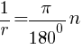
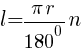
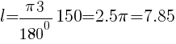
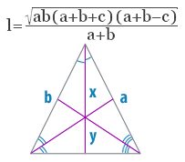

Задание 1: Рассчитать для окружности радиуса r боковую поверхность прямого кругового конуса высотой h; длину дуги, опирающейся на центральный угол.
Введите высоту h (образующая):Введите радиус r:
Введите угол φ:
Результат:
Примечание:
Точка, которая является началом этих лучей, называется вершиной конуса.
Образующая — отрезок, соединяющий точку, лежащую на окружности круга, который является основанием, и вершину конуса.
Высота — расстояние от плоскости основания до точки вершины конуса.
Прямым, если его основанием является эллипс или круг. Причем вершина должна точно проектироваться в центр основания.
Радиальная мера угла – это отношение длины дуги к радиусу окружности. Из формулы длины дуги окружности получаем

Пример 1:
Вычисление площади поверхности конуса
Дано:r = 3
l=3
Решение:
S = π r⋅(r+l)
S = 3.14 * 3 * (3+3) = 56.549
Ответ:
S = 56.549S = 56.549
Пример 2:
Вычислите длину дуги окружности с радиусом 3, если ее градусная мера составляет 150
Дано:
Формула длины дуги центрального угла n° выражается формулой

Решение:
Подставив значения из условия задачи, получаем

Задание 2: Рассчитать все биссектрисы треугольника, зная три сторон.
Введите a:Введите b:
Введите c:
Результат:
Примечание:
Основная формула нахождения биссектрисы в любом произвольном треугольнике, зная все три стороны, базируется на теореме Стюарта , и заключается в извлечении квадратного корня из произведения прилегающих сторон на сумму всех трех сторон и сумму прилегающих сторон за вычетом третьей, а также последующим делением корня этого выражения на сумму прилегающий к биссектрисе сторон.
